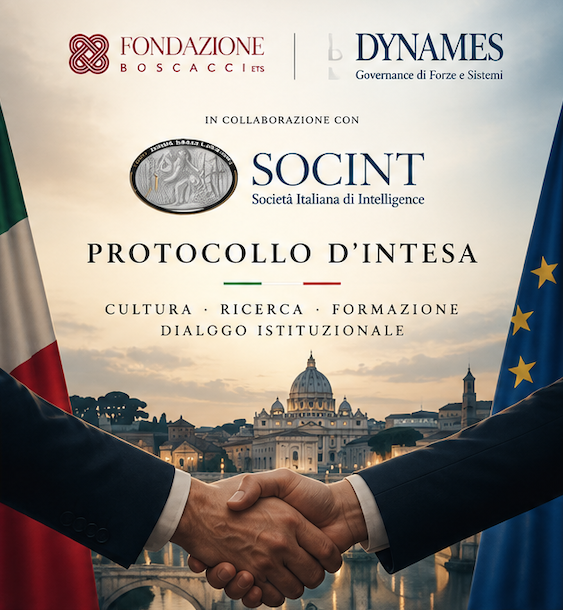
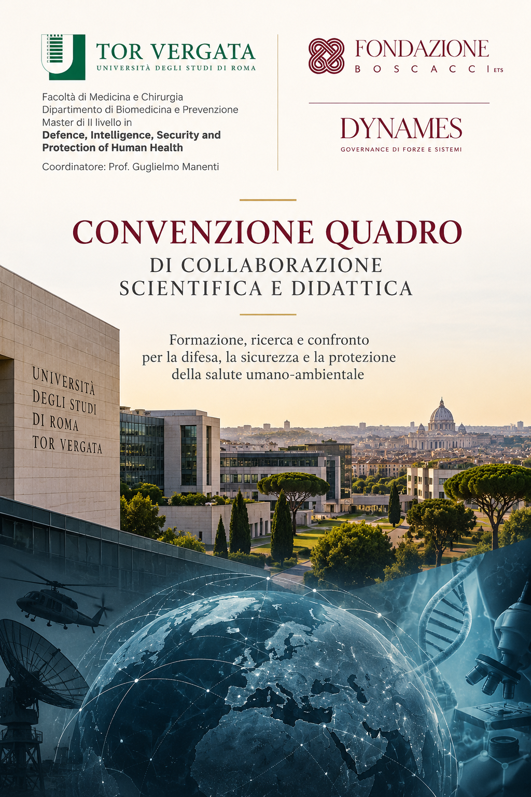
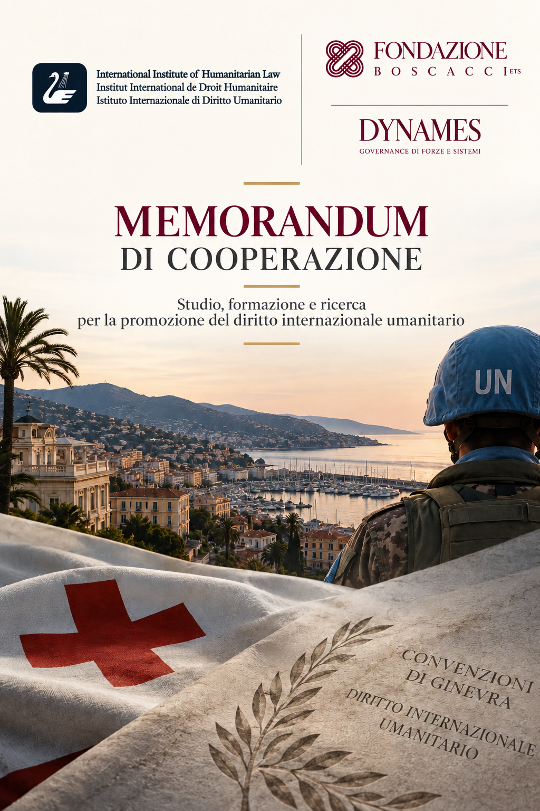

"Momenti di dialogo tra istituzioni, accademia e società civile."
Fondazione Boscacci ETS, attraverso la testata DYNAMES – Governance di Forze e Sistemi, e SOCINT hanno avviato una collaborazione culturale ed editoriale per promuovere la cultura dell'intelligence, della sicurezza, della difesa e della resilienza.
L'accordo prevede attività di divulgazione e valorizzazione di pubblicazioni, ricerche e iniziative scientifiche e formative, oltre allo sviluppo di iniziative editoriali e culturali congiunte sui temi di comune interesse.
La collaborazione favorisce inoltre il dialogo tra studiosi, professionisti, istituzioni e operatori del settore.

Fondazione Boscacci ETS, editore di DYNAMES – Governance di Forze e Sistemi, e l’Università degli Studi di Roma “Tor Vergata”, attraverso il Master di II livello in Defence, Intelligence, Security and Protection of Human Health, hanno avviato una collaborazione scientifica e didattica nei settori della difesa, della sicurezza e della protezione della salute umano-ambientale.
La Convenzione prevede il coinvolgimento di docenti, ricercatori ed esperti, lo scambio di materiali scientifici e didattici, attività editoriali e divulgative congiunte, progetti di ricerca, project work e tesi, oltre alla possibilità di stage formativi per i frequentatori del Master.
L’accordo rafforza il rapporto tra mondo accademico e competenze professionali, favorendo formazione, ricerca e confronto interdisciplinare sui temi di comune interesse.

DYNAMES – Governance di Forze e Sistemi, rivista e piattaforma editoriale della Fondazione Boscacci ETS, e l’Istituto Internazionale di Diritto Umanitario di Sanremo hanno definito un Memorandum di Cooperazione finalizzato a rafforzare le attività di studio, ricerca, formazione e diffusione della conoscenza del diritto internazionale umanitario.
La collaborazione comprende attività formative e divulgative congiunte, lo scambio e lo sviluppo di studi e progetti di ricerca, la collaborazione nelle attività istituzionali e la partecipazione reciproca alle iniziative promosse dalle Parti.
Il Memorandum prevede inoltre la possibilità di organizzare congiuntamente corsi di formazione, seminari tematici, incontri di esperti, conferenze, tavole rotonde e altre iniziative sui temi di comune interesse.
